01 · 今日 PARTIAL
最终原型参考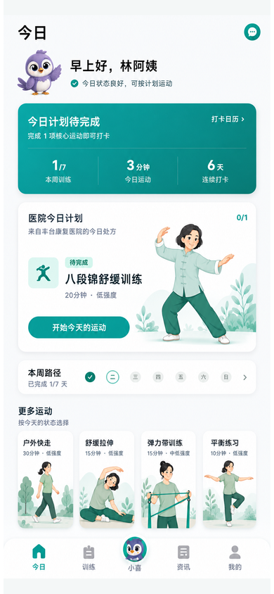
当前真实运行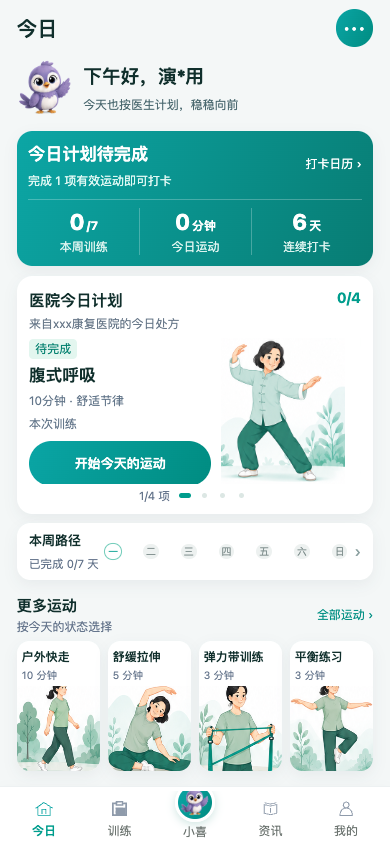
50%叠加对照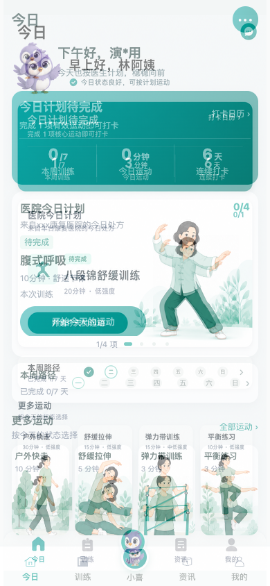
已接入问候喜鹊、白绿计划卡和四类运动插画。患者姓名、处方项目/时长/项数、打卡以本地状态为准，不把图中的示例值写入业务数据。医院今日计划现直接使用最终参考中的人物裁切图。
参考 SHA-256：c1d91f110d387b005c1cf604b1bf68a6ab004c4526539e3e6393d2e4d9836b54
运行 SHA-256：d27f9aac6e07db5eb7f1446447e150a86a5bef2fb11be0e703c438edc49edafd02 · 运动前检查 PARTIAL
最终原型参考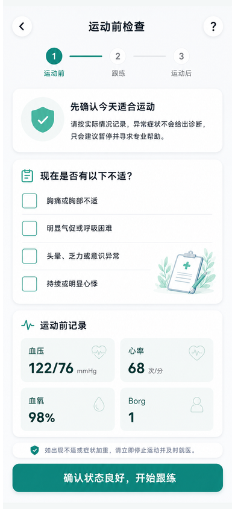
当前真实运行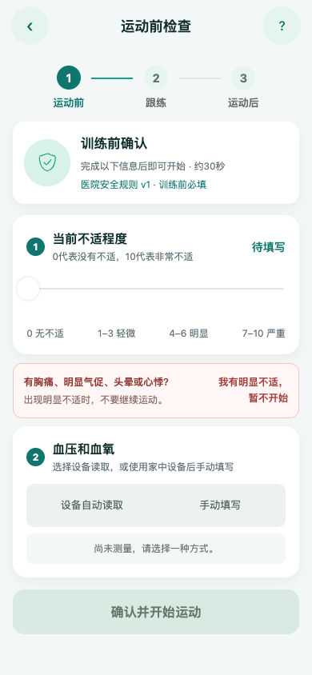
50%叠加对照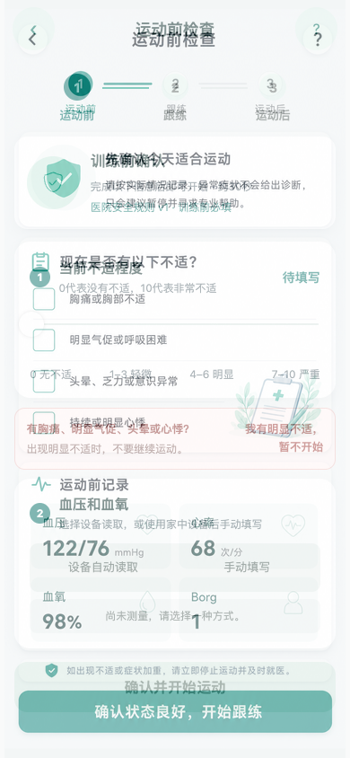
保留原前检查中的不适程度、显著症状立即阻断、设备与手工血压/血氧入口。参考图的四项勾选及额外心率/Borg采集没有直接替代原安全流程，布局仍有差异。
参考 SHA-256：0d9aa36a5f840c5693746c0030db6cb3699c96abe970b585b7b4b256bbbcc554
运行 SHA-256：35b2a3c75987f81cf1835999c3f1d914cfd4d850f65a9f7a289671a5a63562da03 · 动作跟练 PARTIAL
最终原型参考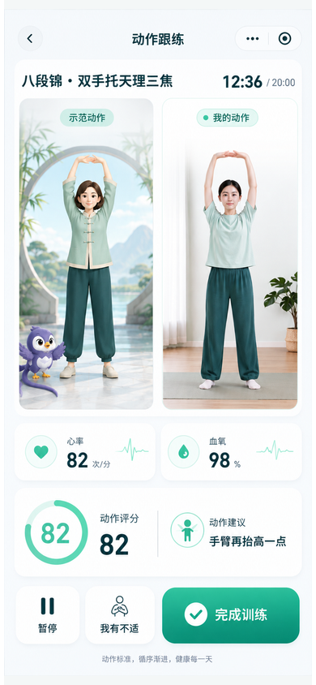
当前真实运行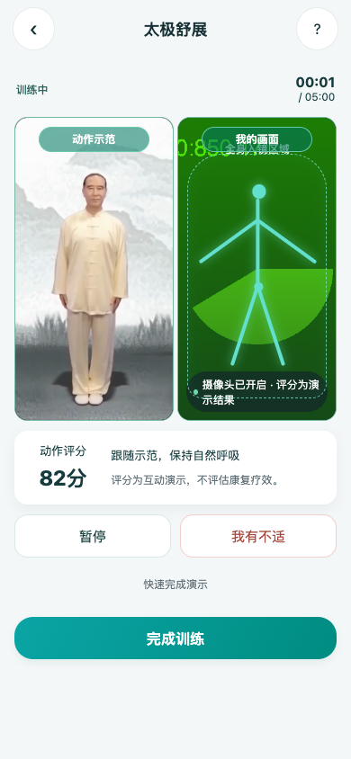
50%叠加对照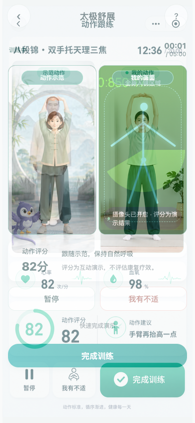
正常训练已调整为白绿主题，暂停为深绿主题。真实训练页使用原教学视频和合成摄像头测试画面，不以人物插画冒充教学或用户摄像头；保持原评分演示边界，普通完成与快速演示仍是独立动作。
参考 SHA-256：74b2e2823a084e4d06d82883987b2d81be7e64de6a48f555d589b750aa01708f
运行 SHA-256：165840921c01de4fc798de4a8f2a603dd9db5f8757c2bd223247344e2dc4a5f904 · 本次运动报告 PARTIAL
最终原型参考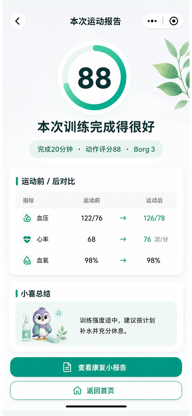
当前真实运行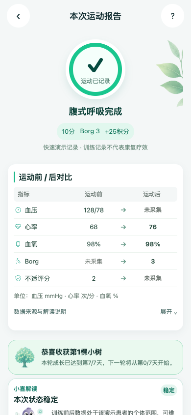
50%叠加对照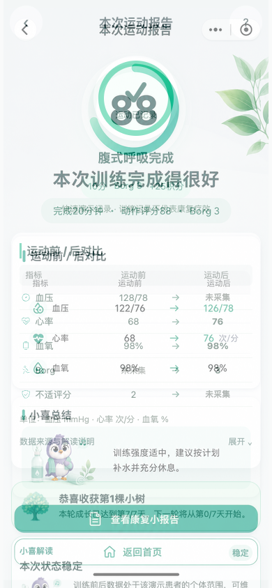
已添加原图叶片和运动后喜鹊。前后测量、停止/演示标记和缺失提示来自真实本地记录；不固定88分，不声称康复改善。单位始终可见，长来源说明可展开查看，仍有正文长度差异。
参考 SHA-256：6e9e7c6d797fa151dcc97f63292fb7b00fe83b73a6b8d95615ce572d1f5d3aa1
运行 SHA-256：19ddd2aba81e50c0e2c6f8b74517527a2855274258b1130b6b9d6671b8b8579c05 · 康复小报告 PARTIAL
最终原型参考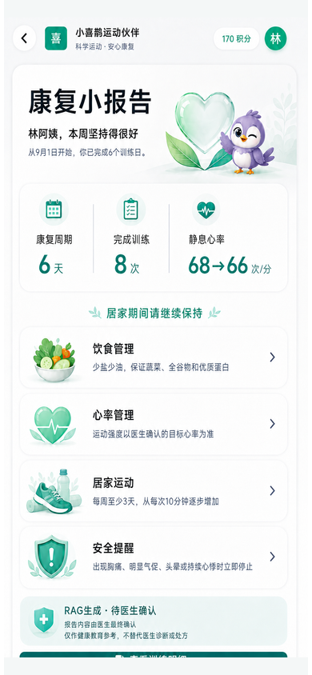
当前真实运行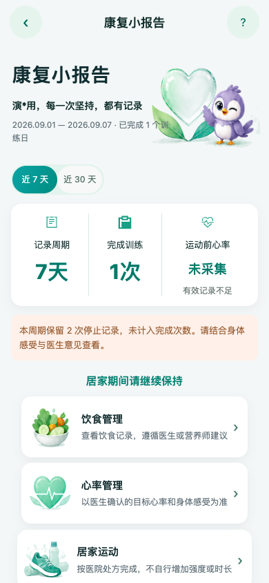
50%叠加对照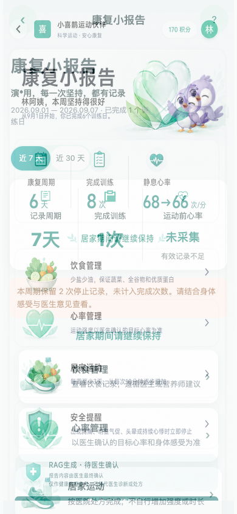
已替换原图爱心喜鹊、饮食、心率、运动和安全插画；保留7/30天切换、训练明细及待确认入口。周期内停止记录和数据不足会占用额外空间。
参考 SHA-256：c0772e8fc0f7a24bc5cc89e5c6c965dbf3fbf1ed6555026f45f3842493fe4188
运行 SHA-256：cd1213787aa00fdbe6ad5abbae87394881f356cc99685566aebbbb3ca250dcf406 · 训练报告中心 PARTIAL
最终原型参考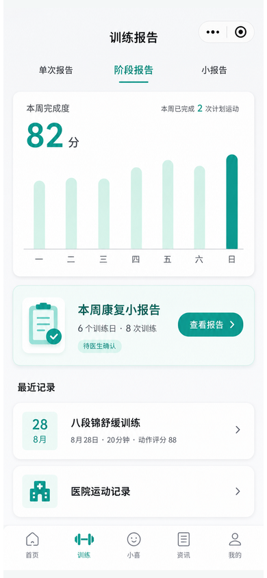
当前真实运行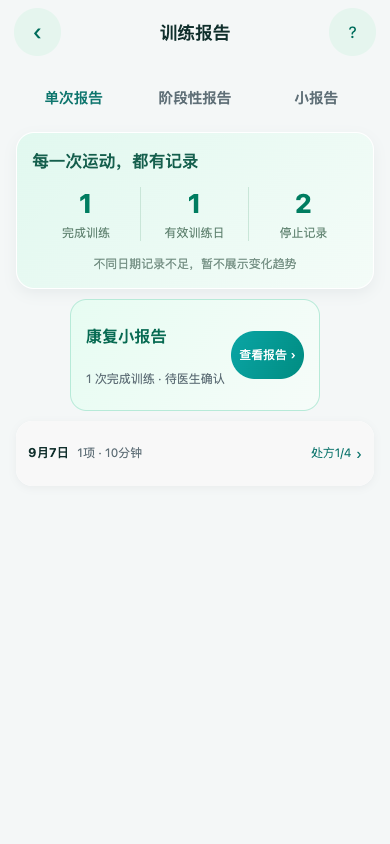
50%叠加对照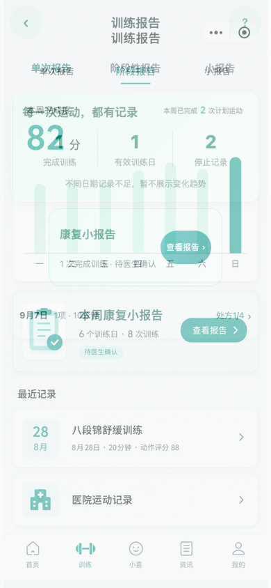
日/月/小报告及历史记录可达，使用真实测试记录。图中阶段分数、图表与当前报告布局尚未做到像素级一致。
参考 SHA-256：357b18ec3c29ff8a82a4f1b3202b625238e50f4fbc16c908c9c53cd41646abbf
运行 SHA-256：5b0b326688a43056fc1d493cbb920196526cd38f185e8b06c5d7c6819cc7262107 · 选择使用方式 PARTIAL
最终原型参考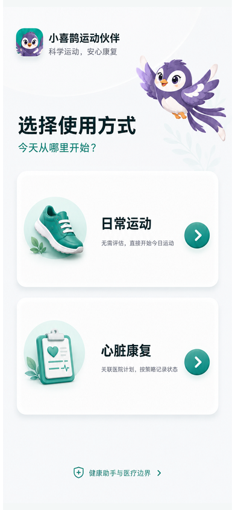
当前真实运行50%叠加对照 已使用原图飞翔喜鹊、图标、鞋和心脏康复夹板；底色调整为中性灰白、两张白色入口卡。与参考图的留白、字体尺寸仍有差异。
参考 SHA-256：ecfb9b591db4e25d633795b36f9455c7145d4ed11c41a59cd695412837a9e8db
运行 SHA-256：94a814fddaa3d739e033693df24f1f6d7cd79dd0858a326b94d2ab297ae0eba008 · 关联康复计划 PARTIAL
最终原型参考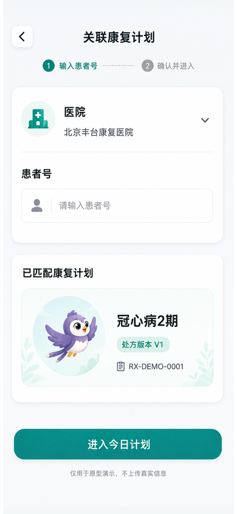
当前真实运行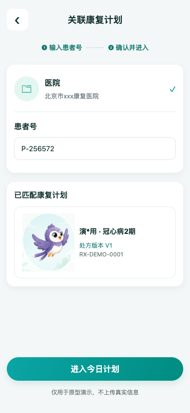
50%叠加对照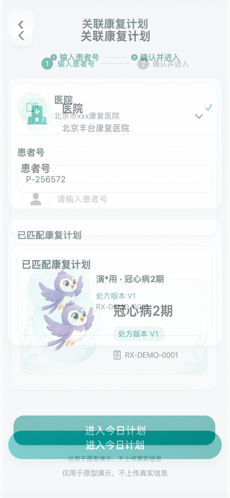
已使用原图配对喜鹊；保留未输入、错误重试、匹配、确认进入状态。医院名称和处方编号采用现有演示档案。
参考 SHA-256：fe5e3f51e7ec6cedc8e1f54205feac764a14521666f94e5f4d919cee73438376
运行 SHA-256：414bd222a04decc5acd894b1b76100159c1d35c6c9b8cb1ec5344cf3c0b5311c09 · 运动选择 PARTIAL
最终原型参考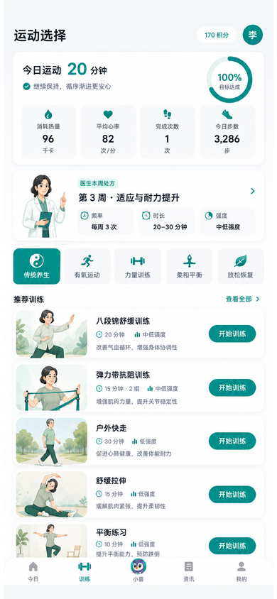
当前真实运行50%叠加对照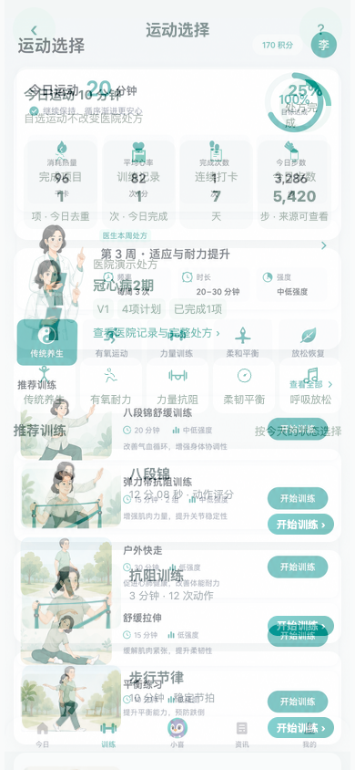
已用原图医生与五种运动插画，默认推荐列表展示八段锦、弹力带抗阻、户外快走等全部9项目，保留5分类筛选与查看全部入口。指标仍用原项目真实可计算的项目/记录/步数，不伪造热量、平均心率和处方剂量。
参考 SHA-256：1998d6ffa93fe1574e54ac87918f6b8b1b7748ddd497e7d71decda6cb9389f2b
运行 SHA-256：a2490e9d08c8cc85bd6c6822024ff0fd512a20aa5f8fa24c220643c2a2e6817110 · 运动后状态 PARTIAL
最终原型参考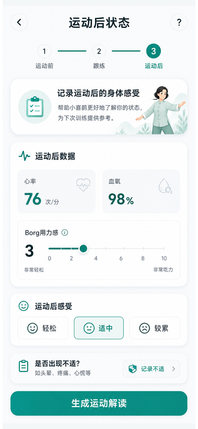
当前真实运行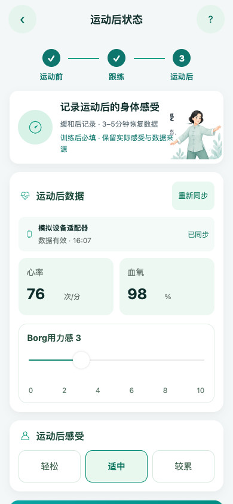
50%叠加对照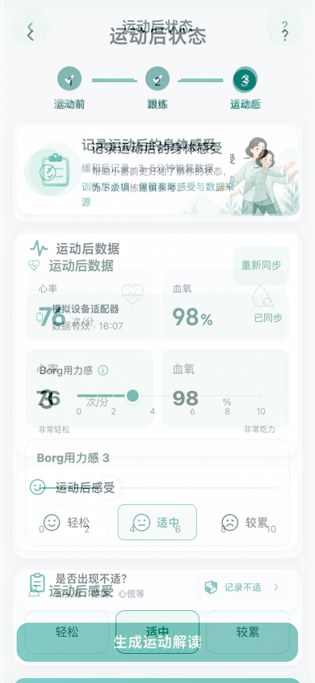
已增加原图运动人物，保留后测同步、Borg、真实感受、不适记录和生成报告流程。未用参考图示例数值代替缺失数据。
参考 SHA-256：fd6468167016e3df45d56046b1a14d13f04800d323884ccd7335b389a307f12f
运行 SHA-256：a8f613d01afbf75ff63b2730164e9e0c160d265675cdc76af0ae7792fc30ce3f11 · 小喜健康助手 PARTIAL
最终原型参考当前真实运行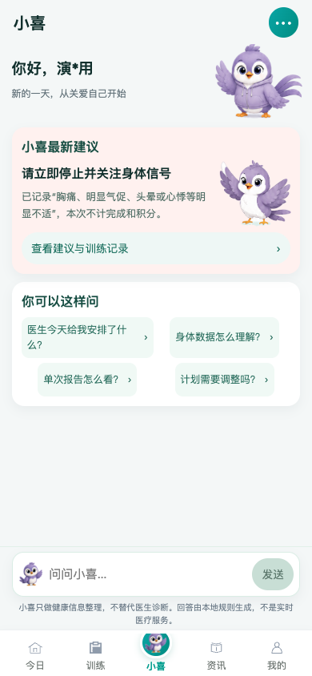
50%叠加对照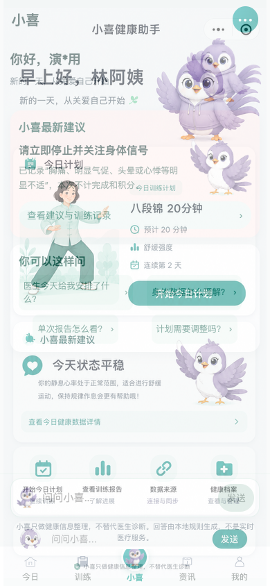
按本轮要求删除今日计划卡和重复快捷入口，仅保留最新建议、推荐问题与提问；输入框固定在导航上方，回答仍是本地规则演示。
参考 SHA-256：34144a6ff4fd1358bb8c1308beb85387aed7999148fc339cb7305c379e6c0cd4
运行 SHA-256：5ae65c9965021064a75f06eeb1e72a12756905a11f842b11c7de64ddc991fe7b12 · 康复资讯 PARTIAL
最终原型参考当前真实运行50%叠加对照
已使用原图植物、夹板、用力感仪表和羽毛喜鹊，卡片底色为白。原知识文章保留；知识视频详情按本轮要求改为静态参考预览；社交入口按原可用性禁用；导航统一为今日/训练/小喜/资讯/我的。
参考 SHA-256：a0797f8ca86cffa1e58b5b8a355b024e0d8ea2bb8f3d5a5d9d44450d971dda12
运行 SHA-256：dc133d9c7eba367e9cd4fc5b2fc9d6cb30bdb643a67b737cf46ac2f3807cd30913 · 知识文章 PARTIAL
最终原型参考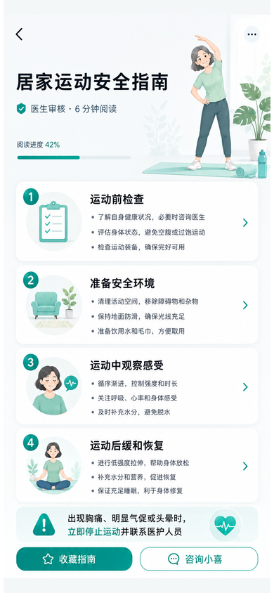
当前真实运行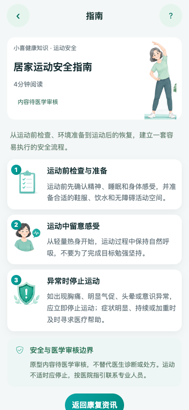
50%叠加对照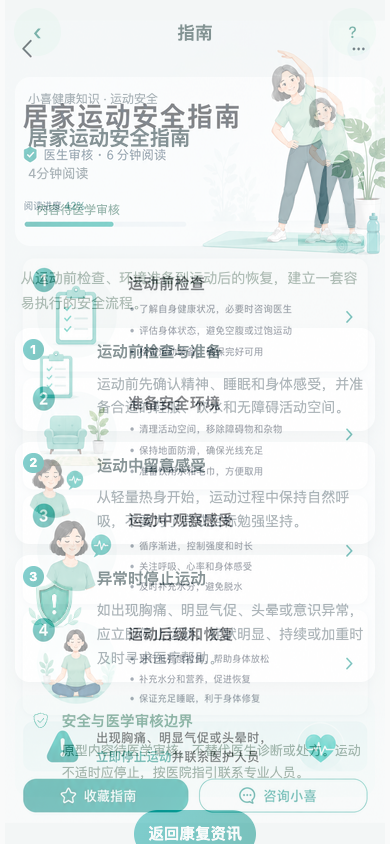
已使用原图拉伸人物与阅读要点插画。章节按原内容保留，不为对齐图片新增医疗建议、虚构审核状态或收藏能力；章节数量与参考图不同。
参考 SHA-256：8c8a4a5db2756f3dfa3aa853da7138d2b908c752e3b36272f3b2ceaf9b25b9b3
运行 SHA-256：c85e6371d3f9f41d16a3cd36c591b211b4d1626c0a77d05dba17d9c0ca087bee14 · 知识视频 PARTIAL
最终原型参考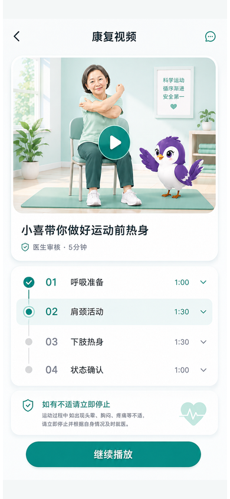
当前真实运行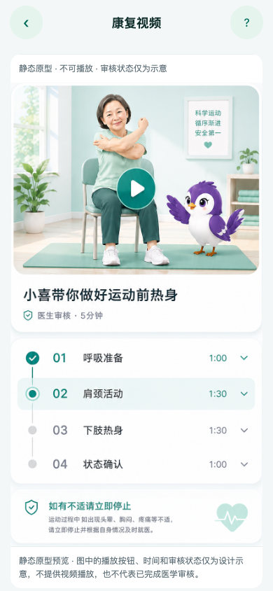
50%叠加对照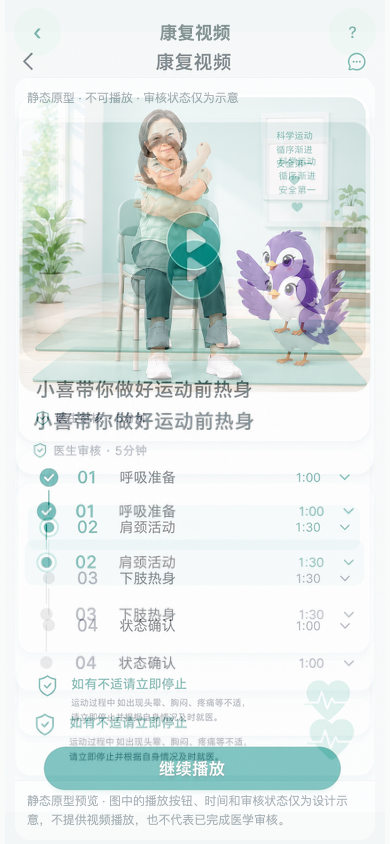
按本轮明确要求移除旧知识视频播放器，直接使用最终参考中的画面与章节设计。顶部明确标注静态原型、不可播放、审核状态仅为示意；实际返回可点击。旧视频文件未删除，训练教学视频不受影响。
参考 SHA-256：84ed244bd442bbccc61e8c33762e1426a4f6a507397b72b268d5f7fc4b3c5ee6
运行 SHA-256：91ac46857afdd54d79c8f8817f968c1b6fcf3788b37e43b33001db7baf03e7b515 · 训练数据 PARTIAL
最终原型参考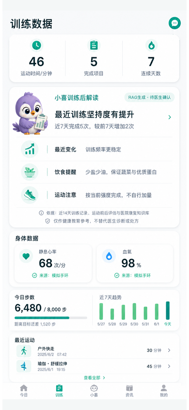
当前真实运行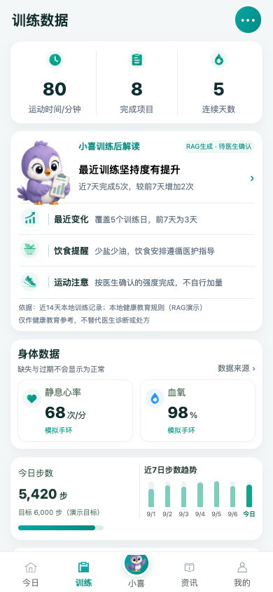
50%叠加对照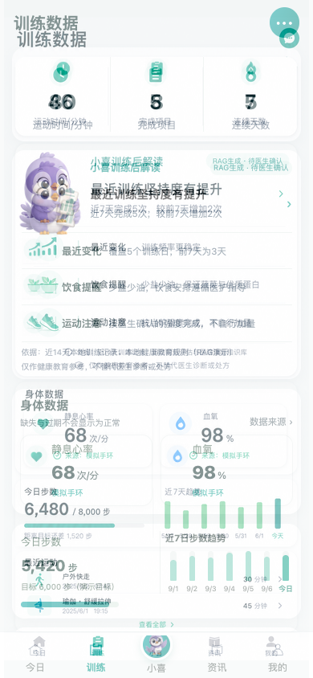
已对齐原图报告喜鹊、三项统计图标、心率/血氧图标和三行解读布局，新增近7天与前7天比较、饮食提示和运动注意；异常信息优先、数据不足不判断提升。主图使用明确记录的隔离测试历史（近7天5次、前7天3次），并非真实患者数据；停止状态另见runtime/15-训练数据.png。
参考 SHA-256：f0d5a425256aed953b330afe1b50ae31917813da86db175b135b1d193fda697e
运行 SHA-256：c77472f98c219535cc1e1cc5e31876ce52dbd791daff4676c5708a47e6a18d2b16 · 个人中心 PARTIAL
最终原型参考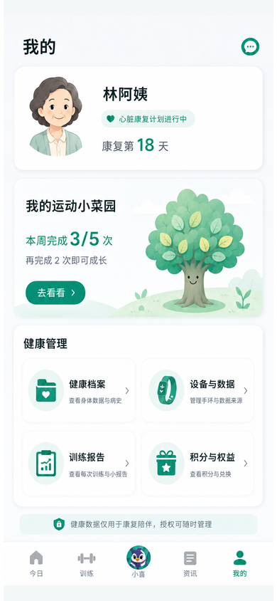
当前真实运行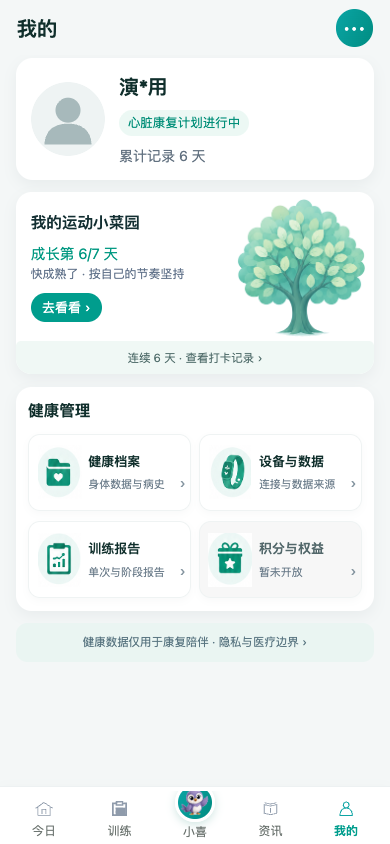
50%叠加对照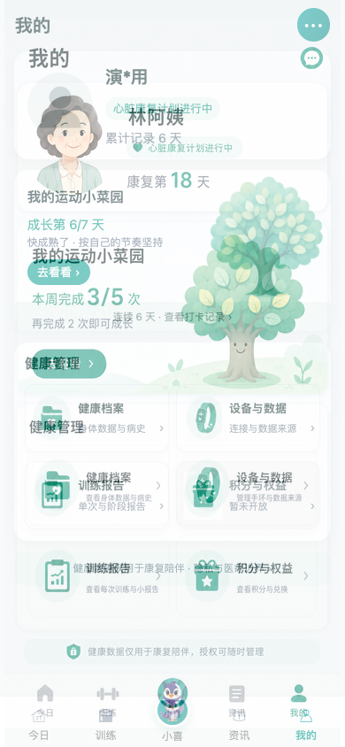
按本轮要求改为中性默认头像，与健康档案共用；补齐原图树与四个健康管理图标。主截图来自普通患者模式，不显示医生/策略工具；演示工具仅本地显式启用时出现。积分入口保留未开放状态。
参考 SHA-256：ca010eeb5792cb57349fe949a9542e6a1f7258e6d7024310e0dc74c2ba2142a1
运行 SHA-256：75edba504d655094dd1268c621a2b1c83b369140922490f1c5c3b6ca486a594b17 · 健康档案 PARTIAL
最终原型参考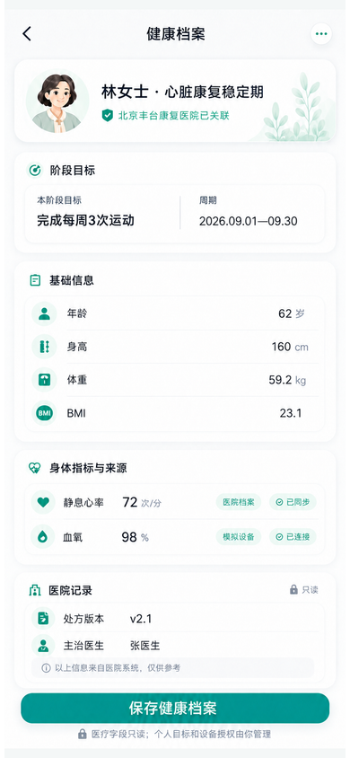
当前真实运行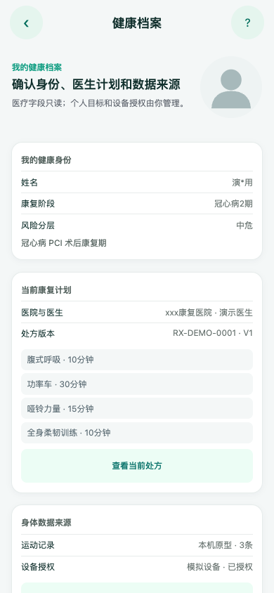
50%叠加对照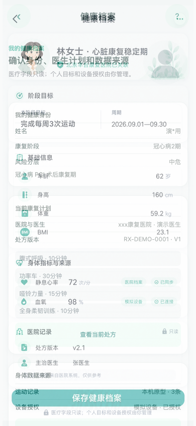
按本轮要求使用与个人中心一致的中性默认头像，统一白卡和灰白背景。原医疗档案字段保持只读，未把图中的姓名、年龄、BMI、阶段目标写入演示患者档案。信息分组仍需进一步对齐。
参考 SHA-256：48e4382f01323c4b7ceaeb9db4bd9daaf4298fb9f2a16b96c4de5576902412a2
运行 SHA-256：24da8107f9e4f3c4b7e72ce9dd1ab1050dd44082c249fe075a0846f7f3c6a91e18 · 设备与数据来源 PARTIAL
最终原型参考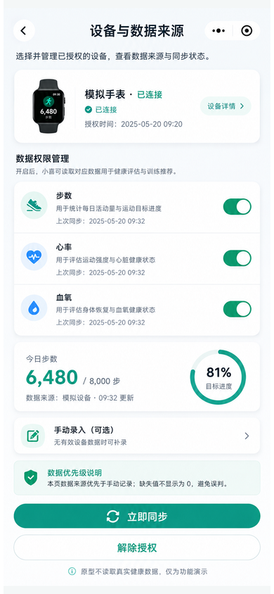
当前真实运行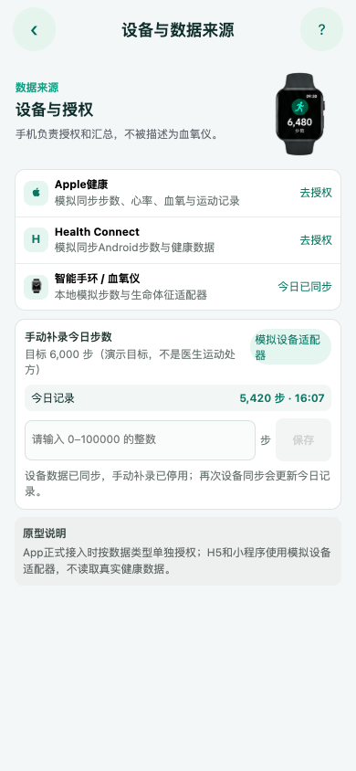
50%叠加对照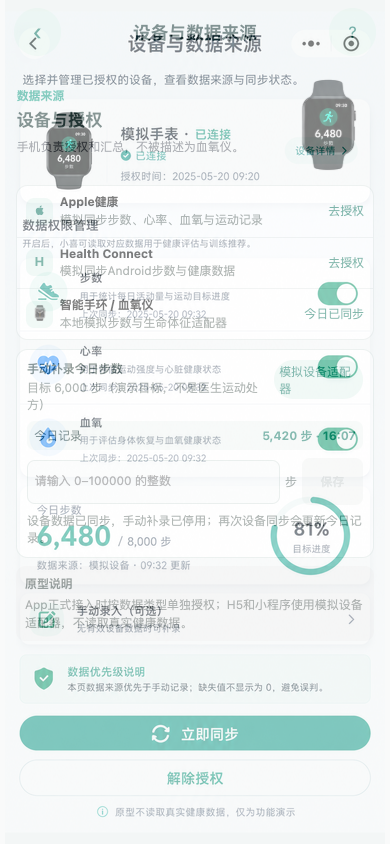
已加入原图手表示意，保留数据来源、手动步数和设备优先级。未新增真实系统权限，也未把手表图中的数字当作实时数据；布局与参考图不同。
参考 SHA-256：f198e9790eb9718608bb53c15d6b50725e9c2effe984dfc5956eedf57d25ed6c
运行 SHA-256：71eab4f256fc9e99c40f597c4a82de16882fdcf6f35a7fc8f4e07c7e4613584e19 · 本周运动路径 PARTIAL
最终原型参考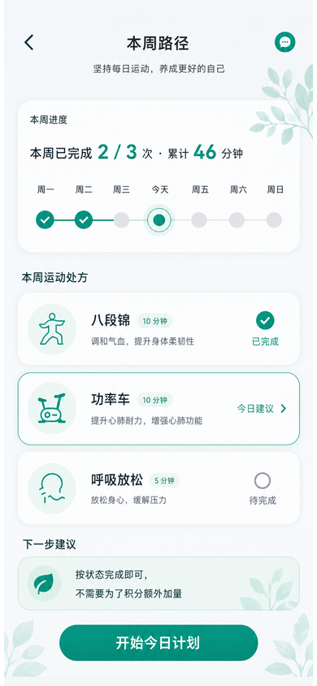
当前真实运行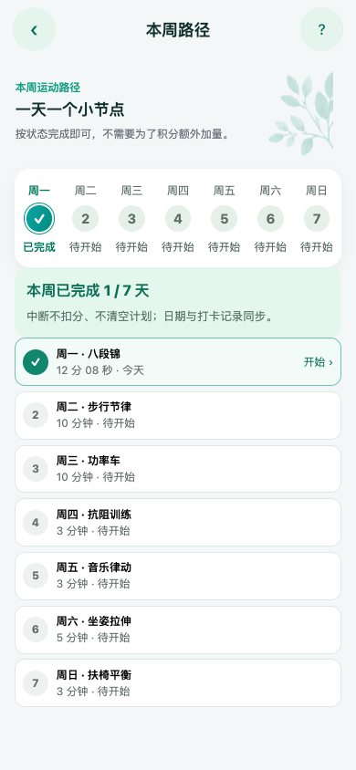
50%叠加对照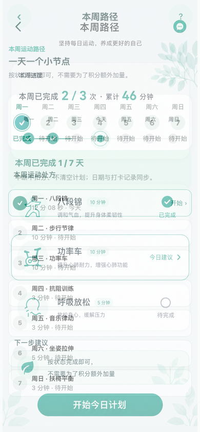
已使用原图叶片、保持周路径可达和当前日入口。真实周计划有7个日期节点，未根据图中3条示例删除原计划。
参考 SHA-256：72f66630b54977c1dce122a059a4c420a6e8598f769003b509d93df022fdc72d
运行 SHA-256：7c8efffad5036481e9d5d60f23175393bf9b1222c46cc6b2c6ed8eb8d1596cf020 · 运动小菜园-成长 PARTIAL
最终原型参考当前真实运行50%叠加对照
已补齐原图无土树、七阶段图标、成长喜鹊、勾选、日历、运动及盾牌图标。主图使用隔离浏览器5个打卡日的测试历史展示成长阶段，不是硬编码树状态；收获后回到新种子的场景另见runtime/20-运动小菜园-成长.png。
参考 SHA-256：65162ef5de9964f100004ead33829662632adec0af7d8242c9f0c476ad7a0edb
运行 SHA-256：318278eae47c62c22316bbb7b7b678cfa4627bc9a4e75429dbcb3d3ecb32c6fa21 · 运动小菜园-打卡 PARTIAL
最终原型参考当前真实运行50%叠加对照
月历、已有打卡和记录由本地日期驱动；漏训不倒退规则保留。截图不固定为参考图的示例月份/连续天数。
参考 SHA-256：63b0068e7c12dad2604be5c75c132573472904e8c7dec487e57af9e69ae28147
运行 SHA-256：9ccc6c5581ef86859ac5f12ea965254ea60958244da1fd5ca2f772abda924bbf22 · 健康小队 PARTIAL
最终原型参考当前真实运行50%叠加对照
已用原图团队人物和成员头像。人员姓名、数量、提醒和邀请码采用既有本地小队模型；仅本地演示入口可达，没有外发提醒。
参考 SHA-256：679449c36f8e9d6346266fd22ffc2a20fcbb8030677bed6a32489bbcb1b8abda
运行 SHA-256：49ac8e7613fcfde1c453bb87bd26ee8a0e0b2189c8e9c1c4d012cb43744b16fb23 · 健康搭子 PARTIAL
最终原型参考当前真实运行50%叠加对照
已用原图双人插画，7/30天周期、每日温和提醒与漏打卡不解除关系均保留。实际搭子名称/天数为本地状态。
参考 SHA-256：d400a8c8d7651941346e373a602aa7f7fb5d5a3637acc43fd1db31c7a50529c1
运行 SHA-256：c9747f63bff272df1902949da207e25f226c9ce01b9d97ac27289b63f19deb5a24 · 健康积分与权益 PARTIAL
最终原型参考当前真实运行50%叠加对照
已用原图礼物喜鹊、手册、弹力带、徽章。兑换保持原积分/权益规则和确认弹窗；普通用户入口仍未开放，仅本地演示可用。
参考 SHA-256：137d3047bf5d68e778ee1653a863b3926924c0ca06e7d50c51874f08372bfe00
运行 SHA-256：99fe77d4a9be2516f31d7b08405f62801d3fc4df85c7c02f9c26d47d4b42d36c25 · 训练状态策略 PARTIAL
最终原型参考当前真实运行50%叠加对照
已用原图配置夹板和白色配置卡。发布前草稿与发布后生效规则保留；实际字段/版本不随参考图的虚构数值改变。仅本地演示工具可达。
参考 SHA-256：5877257f00ac292011439c6aedd9aeeea820bfa56b6dca8b94b978fbdb6a3e5f
运行 SHA-256：16ae4e0be8874cea610638472afc7904ea9f3093eeb75b96ff8978c765670efd26 · 医生审核队列 PARTIAL
最终原型参考当前真实运行50%叠加对照
保留审核三种动作及状态，统一白色卡片；示例建议来自本地规则，未写入参考图中未经依据的功率或心率效果承诺。仅本地演示可达。
参考 SHA-256：010d33eef4883c87d33a2c1751a2d191fa0840b7af5564e837545ff5e77d57e1
运行 SHA-256：865745e757af367996ce911ca29f7e33072553a235af29171c90478fb00f792527 · 安全停止提示 PARTIAL
最终原型参考当前真实运行50%叠加对照
真实训练画面上的停止弹层；三种症状和主动停止可点击，取消后恢复原活动/暂停状态，停止不新增积分。合成摄像头画面不是实际患者。
参考 SHA-256：aa838f623c46e3d4b1cd2c226e5d36c87a4cce2a6103ea0b26bd3a5ff63add8b
运行 SHA-256：95a3192096feb3c1f9beee618da65c6c2099fadac39681ff69e6a5016e199c0228 · 训练暂停状态 PARTIAL
最终原型参考当前真实运行50%叠加对照
真实暂停页保留原休息紫色喜鹊，继续/结束/不适入口可操作，计时及媒体暂停经过验证。仍保留原教学视频，所以不是图片中的虚构人物双镜头。
参考 SHA-256：761b54949a14946765ecc73be8c67c31c1214dc31f377137504984061ebeb656
运行 SHA-256：5b03158e2e1cb289fd16043cd14986244ddd501afe5470c3d7bb36c683f0c9d0返回目录 ↑